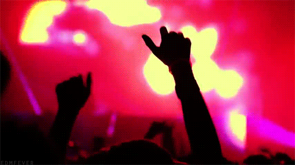
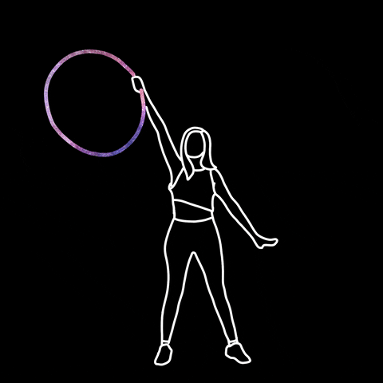
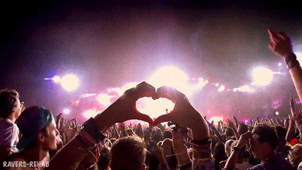
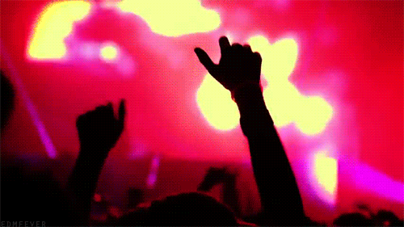
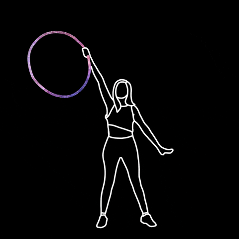
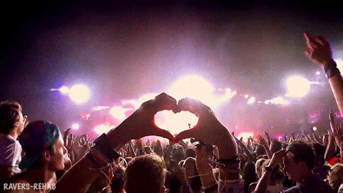

The Genres of EDM
The Genres of EDM
Raves and Festivals 
 Flow Art
The Voice of the Ravers 
Hello everybody, my name is Patty :)
I've always had an interest in EDM music since I was about 14 years old, but I barely
started raving about a year ago. Let me tell you, it's a whole other experience. The whole culture is nothing what
you would expect. A lot of people get misconceptions about it, especially when it comes to the drug aspect of it,
but it's so much more than that. It's about the music you hear, the happiness and excitement you feel,
and the connections you make. Let me take on you on a trip through my eyes so you see what I mean
Click on any Realm to Travel
The Genres of EDM
Raves and Festivals 
 Flow Art
The Voice of the Ravers 